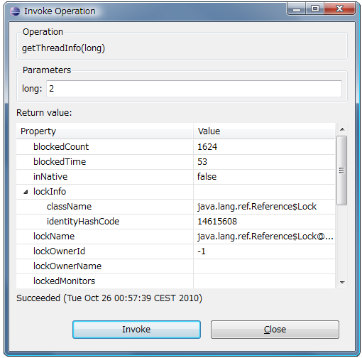

Invoking MBean operations
To invoke MBean operations:
-
Select an MBean, and make sure that Operations page is opened to invoke the associated MBean operation.

-
Select an operation, and select the context menu Invoke... to open Invoke Operation dialog.
Enter the parameters, and press Invoke. The return value is shown at Return value section on dialog.
Press Close to close the dialog.
